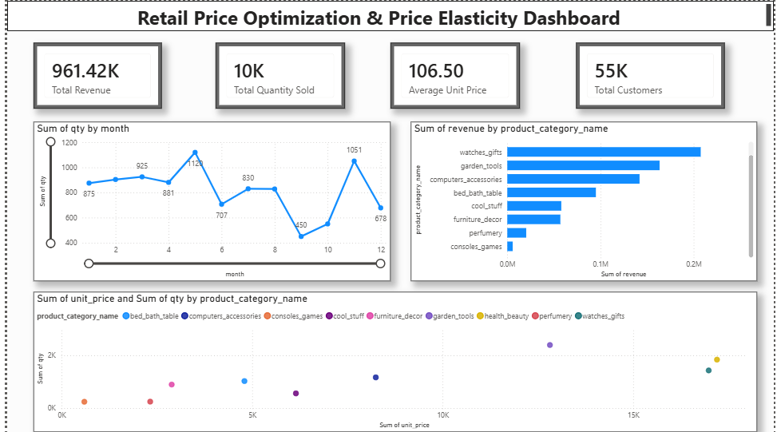

Retail Analytics
Pricing and sales behavior
Retail Price Optimization & Demand Prediction
A retail analytics project that combines exploratory data analysis, regression models, price-demand analysis, and Power BI visualizations to uncover pricing patterns and support data-driven business decisions.
Pricing and sales behavior
Regression-based prediction
Interactive business dashboard
Explore how retail prices, product characteristics, and competitor pricing relate to quantity sold and business performance.
PricePilot is a retail price optimization and demand prediction project built around a retail pricing dataset from Kaggle. It investigates factors associated with product demand and uses regression models to predict quantity sold.
The project combines data cleaning, exploratory analysis, feature engineering, machine learning, price-demand analysis, and Power BI reporting to translate data into business insights.
The Kaggle Retail Price Optimization Case Study dataset provides product, pricing, sales, and competitor-related information for analysis.
Unit price, freight price, and competitor prices help investigate pricing differences and their relationship with sales.
Price analysisProduct categories, customer counts, ratings, and related attributes support comparisons across products.
Feature analysisQuantity sold, sales information, and date fields support regression modeling and trend analysis.
Demand predictionThe project follows a structured analytics pipeline, from data preparation through model evaluation and dashboard reporting.
Inspect data types, missing values, duplicate records, and statistical summaries before analysis.
Visualize price distributions, quantity sold, category patterns, monthly trends, revenue, and competitor prices.
Create features such as revenue, average competitor price, price difference, and price ratio.
Compare regression models using evaluation metrics and present business metrics through an interactive Power BI dashboard.
Three regression approaches were compared to predict quantity sold. MAE, RMSE, and R² were selected as evaluation metrics.
Provides a baseline for modeling relationships between the selected input features and quantity sold.
Baseline modelModels nonlinear relationships by learning decision rules from the input features.
Best reported R²Combines multiple decision trees to produce a regression prediction.
Ensemble modelEvaluation: MAE and RMSE measure prediction errors, while R² indicates how much variation in the target is explained by the model on the evaluated data. The evaluation setup matters when interpreting these results.
The following R² scores are taken from the project's README.
| Regression Model | R² Score | Comparison |
|---|---|---|
| Decision Tree Regressor | 0.934 | Highest reported R² |
| Random Forest Regressor | 0.919 | Second highest |
| Linear Regression | 0.826 | Baseline comparison |
Based on the reported R² scores, the Decision Tree Regressor achieved the highest score and was selected as the final model.
Before publishing: verify these values against your notebook outputs and confirm that the scores were calculated on held-out test data. Add the actual MAE and RMSE values if available.
The analysis investigates pricing patterns, sales volume, revenue, and competitor prices to identify relationships that may be useful for retail decisions.
Price elasticity describes how demand responds to a change in price. This project explores price-demand relationships and related trends in the retail dataset.
Correlation and visual patterns can help identify relationships, but they do not by themselves establish that price changes caused changes in demand.
An interactive Power BI dashboard presenting retail KPIs, monthly quantity trends, revenue by product category, and price-quantity comparisons.

Data processing and model development
Data manipulation and numerical operations
Regression models and evaluation metrics
Exploratory data visualizations
Interactive dashboard and business reporting
Data exploration and experimentation
The project brings together retail data preparation, exploratory analysis, feature engineering, regression model comparison, price-demand analysis, and dashboard reporting.
The implementation compares Linear Regression, Decision Tree Regressor, and Random Forest Regressor to predict quantity sold, with Power BI used to communicate business metrics and trends.
Apply hyperparameter tuning and cross-validation to evaluate model performance more robustly.
Quantify price sensitivity using an appropriate method and validate the assumptions behind the estimates.
Simulate alternative pricing scenarios and compare projected revenue, using clearly stated assumptions and constraints.